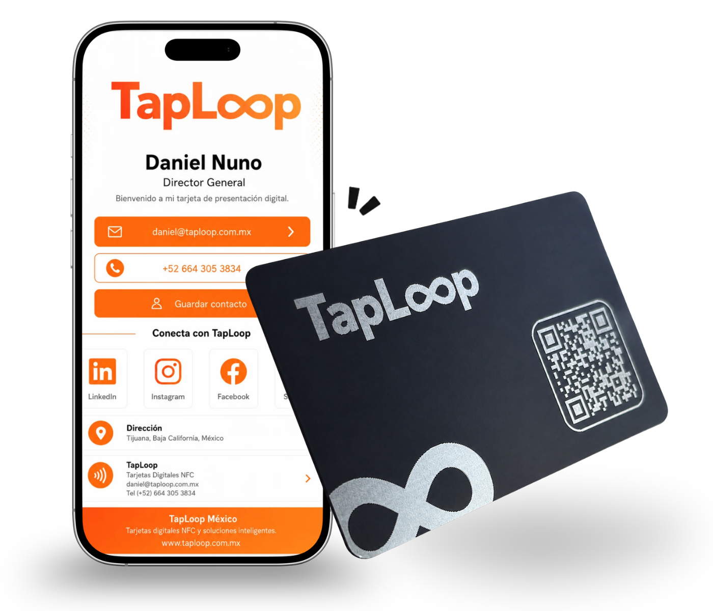

PVC Digital NFC Card
Durable, lightweight, fully branded, and practical for professionals, sales teams, events, and company rollouts.
View PVC CardRequest a QuoteTapLoop card catalog
Both TapLoop card options open a digital profile through NFC or QR code. Choose PVC for daily use, metal for a premium first impression, or combine both for your team.
Durable, lightweight, fully branded, and practical for professionals, sales teams, events, and company rollouts.
View PVC CardRequest a Quote
A premium, substantial card for executives, consultants, founders, partners, and high-value networking.
View Metal CardRequest a QuoteDigital NFC business card
An NFC business card is a physical card with a programmed chip and QR code that opens your digital profile. The other person does not need an app.
A compatible phone opens your profile when it is placed near the card.
The printed QR code opens the same profile from any phone camera.
Your customer can save your contact, open WhatsApp, visit your website, and view key links.
Everything is prepared so your card is ready to share from day one.
Design aligned with your logo, colors, name, role, and brand identity.
Contact details, WhatsApp, social links, website, location, documents, and catalog links.
The card is configured to open your profile from compatible phones.
The QR code opens the same profile as a universal backup.
For teams
Create a consistent brand experience while every employee shares their own name, role, phone, email, WhatsApp, and links.

Answers about TapLoop NFC cards, digital profiles, and team solutions.
It is a physical card with an NFC chip and QR code that opens a digital profile with contact details, WhatsApp, social media, website, and links.
No. The digital profile opens in the phone browser through NFC or QR code.
Yes. The card and profile can be customized with your logo, colors, name, role, QR code, and key links.
Yes. We can create a consistent visual system and one digital profile for each employee.

Ready to start?
Tell us how many cards you need, which card type you prefer, and what your digital profile should include.